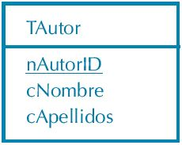
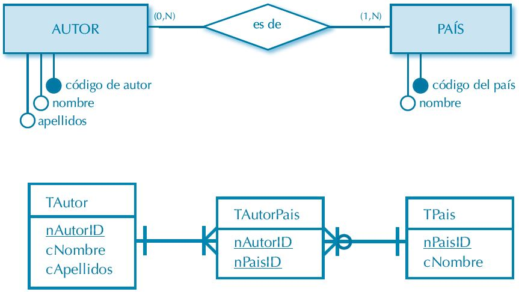
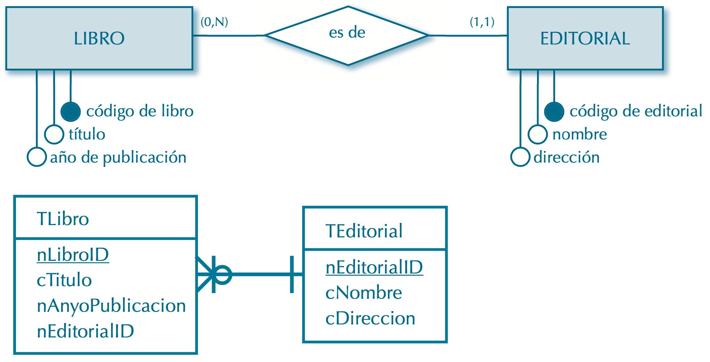
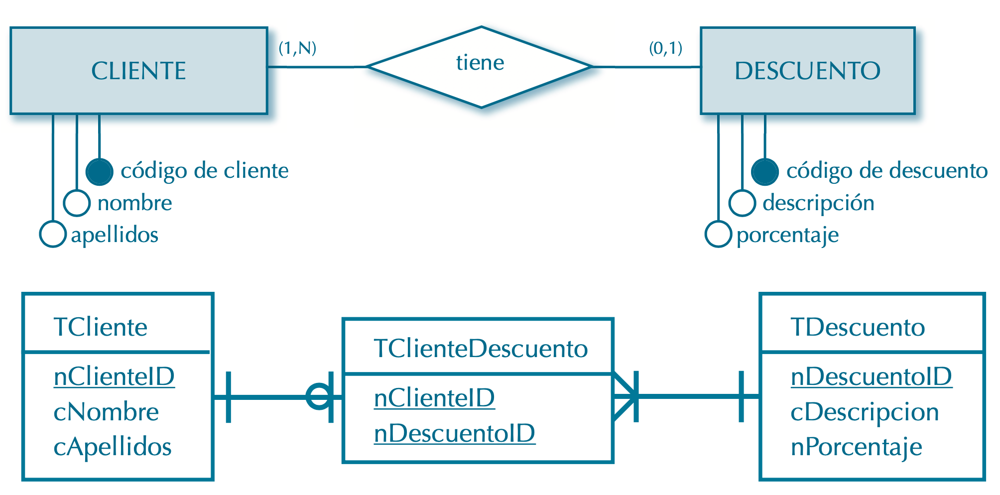
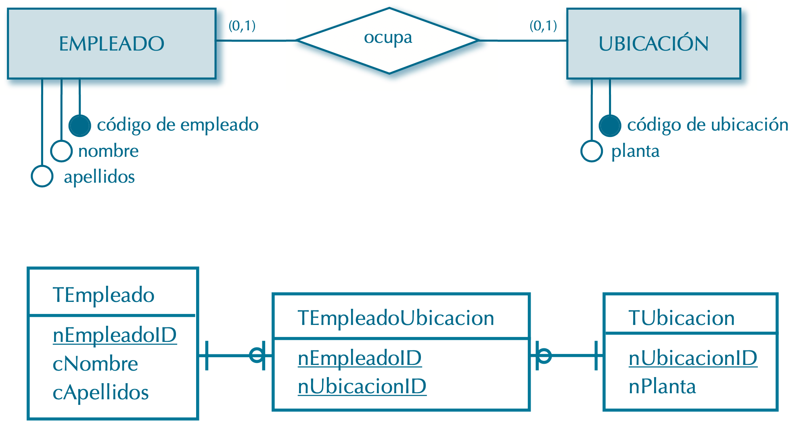
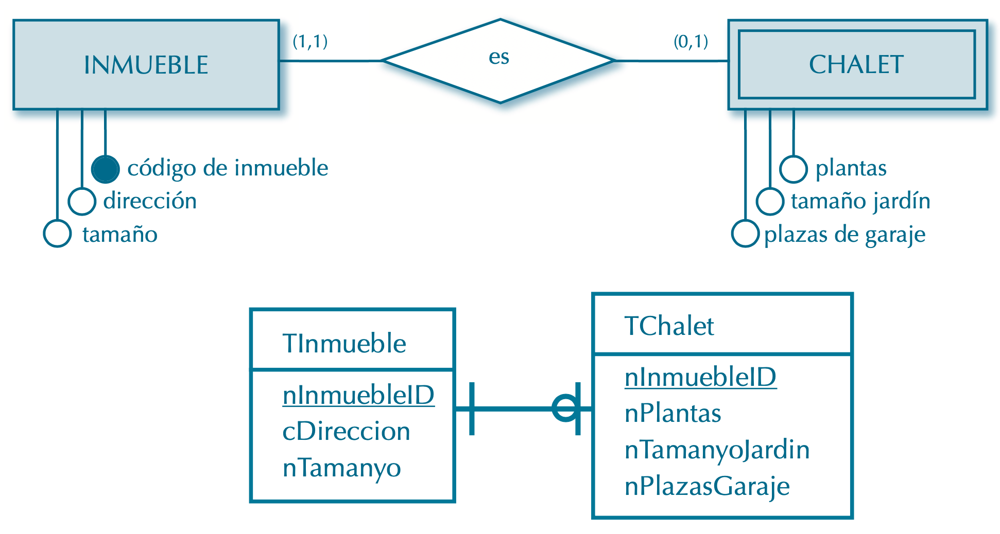
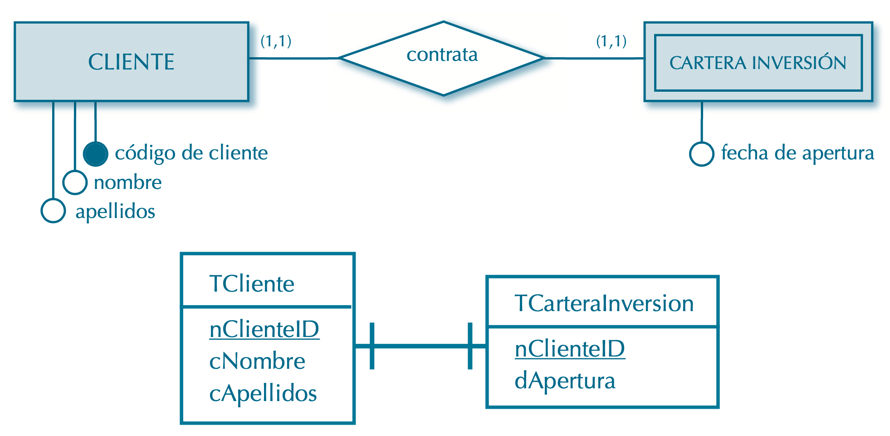

Semana 12
Paso del Modelo E-R al modelo físico de datos
El objetivo del diagrama entidad-relación y las técnicas de normalización es proporcionar el mejor diseño posible para una futura base de datos.
En el modelo relacional la información se almacena en forma de tablas con campos y registros, a modo de las relaciones, los atributos y las tuplas del modelo relacional (coincidentes, a su vez, con las entidades y relaciones, los atributos y las ocurrencias del diagrama entidad-relación).
Nomenclatura
Se define una nomenclatura común a todos los elementos de modelo físico y base de datos referidos. Para ello se usará como punto de partida la notación húngara, definida en los años 70 por Charles Simonyi, programador húngaro de Xerox. Simonyi estableció unas reglas de nominación de variables que aportaba información sobre su ámbito y tipo de datos.
Centrada originalmente en código fuente de programación, se presenta a continuación una adaptación reducida de la notación húngara a los nombres de elementos de una base de datos relacional, según los siguientes criterios:
Nombres de tablas.
Se prefijarán con una "T" mayúscula (TEmpleado, TCliente).Nombres de campo.
El prefijo, una letra minúscula, indicará el tipo de datos del campo, de acuerdo a los siguientes tipos básicos:
Números
"n" (nCantidad, nTotal), de number.Cadenas de caracteres:
"c" (cNombre, cCiudad), de character.Fechas:
"d" (dNacimiento, dAlta), de date. Nótese que ya no es necesario especificar la palabra "fecha" (dFechaNacimiento sería redundante).Valores lógicos:
"l" (lSexo, lPensionista), de logical.Objetos:
"o" (oFoto, oDocumentoXML), de object.
Nombres (genérico).
El primer carácter de un nombre siempre será una letra.
Se evitará el uso de caracteres de alfabetos locales, como la eñe, la ç, las vocales acentuadas o con diéresis, etc. Únicamente se aceptarán como válidos los siguientes caracteres:
- Letras del alfabeto en mayúscula y minúscula.
- Números.
- Signo de subrayado o guion bajo ("_").
Identificadores.
Todo campo creado para identificar de forma unívoca los registros de una tabla (código de cliente, código de libro, código de país) llevará como sufijo las letras "ID
" (identificador
) en mayúscula (nClienteID, nLibroID, nPaisID).
Observaciones:
- A pesar de que esta nomenclatura puede resultar insuficiente en el entorno de trabajo de un SGBD real, nos servirá como marco de referencia común para los ejemplos de este texto.
- Queda a discreción del lector ampliarla y/o adaptarla como convenga a sus necesidades.
Ejemplo.
Se muestra la tabla TSocio, resultante de la relación "Socio" vista anteriormente:

Reglas de transformación
Se propone la siguiente representación gráfica de modelo físico de datos:
- Las tablas se representan como un rectángulo con el nombre de la tabla en la parte superior
y la lista de campos en la inferior. Los campos que conformen la clave primaria
irán subrayados y en orden:

- La modalidad irá implícita en la terminación de las líneas que relacionan tablas, del siguiente modo:
| Modalidad | Simbolo |
|---|---|
| Modalidad (O,1) | |
| Modalidad (1,1) | |
| Modalidad (1,N) | |
| Modalidad (0,N) |
Observación:
En algunos casos, las relaciones generan tablas. A la hora de asignar nombre a dichas tablas se pueden seguir dos criterios:
- Utilizar un sustantivo que represente la acción implícita en la relación ("cliente contrata servicio" generaría una tabla TContrato, "usuario compra producto" generaría TCompra).
- Concatenar los nombres de las entidades relacionadas ("profesor imparte asignatura" generaría TProfesorAsignatura).
Transformación de componentes del diagrama entidad-relación en elementos del modelo físico de datos
La transformación de componentes del diagrama entidad-relación en elementos del modelo físico de datos sigue las siguientes reglas:
- Toda entidad se convierte en una tabla.
- Todo atributo pasa a ser un campo. Los atributos marcados como parte de la clave primaria se convierten en campos de la clave primaria de la nueva tabla, conservando su orden.
- Las relaciones presentan casos basadas en su cardinalidad. Uno de los objetivos
fundamentales a la hora de diseñar una base de datos es evitar la proliferación de valores
nulos:
Relaciones de cardinalidad M:N, ternarias y $n$-arias
. Se convierten en tabla. Su clave primaria será la concatenación de las claves primarias de las entidades que relacionan.
Ejemplo.
Relaciones de cardinalidad 1:N.
En este caso se consideran tres posibilidades básicas:
- Si la relación tiene algún atributo, se convierte en tabla:
Ejemplo.

Es posible que se dé una circunstancia que haya que evaluar en el momento de la transformación: si algún atributo de la relación debe formar parte de la clave primaria o no. En el presente ejemplo, la relación cuenta con tres atributos,“Fecha de contratación”,“Fecha de cancelación” y “Contrata seguro”. Si la especificación de requisitos indica que un cliente puede contratar el mismo servicio más de una vez (previa cancelación), la clave primaria de TContrato (formada por la concatenación de las claves primarias de las entidades relacionadas) no garantizaría la unicidad (podría haber dos registros con el mismo nClienteID y nServicioID). En ese caso, se debería añadir la fecha de contratación a la clave (entendiendo que no puede haber un cliente que contrate el mismo servicio dos veces en la misma fecha):
Ejemplo.

Este tipo de problemática tiene que ver con la dimensión temporal de la información almacenada en una base de datos, y suele requerir intervención especial por parte del analista, que evaluará cuál es la solución más eficiente para cada caso.
Si la modalidad mínima en el lado de cardinalidad 1 es 1 y no hay atributos, la relación desaparece. Los atributos que conforman la clave primaria de la entidad de modalidad máxima 1 se propagarán a la entidad de modalidad máxima N:
Ejemplo.
Debemos referirnos aquí a un nuevo concepto. Cuando el campo o campos que conforman la clave primaria en una tabla aparecen en otra tabla distinta, se dice que conforman una clave ajena o foránea. En el ejemplo nEditorialID es clave primaria en TEditorial y clave ajena en TLibro.
Si la modalidad mínima en el lado de cardinalidad 1 es 0, la relación se convierte en tabla.
Ejemplo.
Observación:
Si, en el presente ejemplo, se hubiese optado por propagar nDescuentoID a TCliente se podrían generar valores nulos en dicho campo, ya que no todos los clientes tienen descuento.
- Si la relación tiene algún atributo, se convierte en tabla:
Relaciones de cardinalidad 1:1
Se trata del caso más complejo. El objetivo es evitar a toda costa que queden campos sin valor. Generalmente requiere un estudio detallado de las circunstancias concretas de cada caso, pero se pueden definir unas reglas para ciertas situaciones:
Si ambas modalidades son (0, 1), la relación genera una tabla.
Obsérvese el siguiente ejemplo, donde se relacionan empleados con ubicaciones físicas dentro de una oficina, dándose la posibilidad de que haya empleados sin ubicación (personal de limpieza o mensajería) y ubicaciones vacías (mesas sin ocupar). Propagar cualquiera de las claves primarias a la otra entidad ocasionaría valores ausentes en campos (empleados sin valor en su código de ubicación o ubicaciones sin valor en su código de empleado):
Ejemplo.
Si una modalidad es (0, 1) y la otra (1, 1), la relación desaparece y la clave de la entidad con modalidad mínima 1 se propaga a la entidad con modalidad mínima 0.
De forma más intuitiva, en el siguiente ejemplo se puede ver que todo chalet es un inmueble, pero no todo inmueble es un chalet, por lo que lo lógico es que la clave de “Inmueble” se propague a “Chalet”, y no al revés:
Ejemplo.
Nótese que en este caso la clave primaria deTInmueble se propaga aTChalet como clave ajena, pero también funcionará en TChalet como clave primaria (se garantiza la unicidad), aunque se rellene con valores ya existentes en TInmueble. En este caso, en el que una entidad débil necesita de la clave primaria de la entidad fuerte de la que depende, se dice que hay una relación de dependencia en identificación. Cuando la entidad débil puede generar su propia clave primaria se habla de dependencia en existencia. Si, en vez de conformar la clave primaria de TChalet por completo, nInmuebleID fuese parte de una clave compuesta, la relación seguiría siendo de dependencia en identificación.
Si ambas modalidades son 1...1, pero una de las entidades es débil, la relación desaparece y la clave de la entidad fuerte se propaga a la débil.
Supongamos una relación 1 a 1 entre clientes y carteras de inversión donde la cartera de inversión se crea exclusivamente a partir del cliente:
Ejemplo.
Si ambas modalidades son 1...1 y no hay entidades débiles, o bien si existe algún atributo de relación
Habrá que estudiar en detalle cuál es la opción adecuada en cada caso, dependiendo de la semántica de los datos almacenados y de otros detalles técnicos, como el número estimado de accesos a cada una de las tablas o el orden de consulta de la información.